Project Minder
A local-only dev dashboard that auto-scans your projects and surfaces the context you need — without leaving your browser.

A local-only dev dashboard that auto-scans your projects and surfaces the context you need — without leaving your browser.
Auto-scans one or more dev directories in parallel and renders every project as a card — git branch, dirty-file count, tech stack, and status at a glance. Background git checks populate amber +N indicators as results arrive. Search, filter by status, and sort across all projects in seconds. Hide noisy projects via the three-dot menu and restore them from the dashboard footer. Multiple scan roots let you monitor projects across different drives or locations from a single dashboard.


Dashboard cards show a live green "coding" or amber "waiting on you" badge when a Claude session is active — inferred from the JSONL tail and refreshed automatically every 15 seconds. The Sessions browser supports full-text content search across message bodies (not just prompts), auto-refreshes without a manual reload, and highlights matched snippets inline. Session recaps — written by Claude Code's /recap command — surface as the primary session label with an amber badge, with full recap history on the detail page. Session timelines render fenced code blocks and inline code spans. Insights extraction scrapes ★ Insight blocks from conversation history into searchable per-project files. The Usage dashboard breaks down token spend by model, project, and 13 activity categories — worktree sessions are merged into their parent project — with CSV/JSON export.


Every Claude Code agent persona and slash skill on your machine, indexed in one place. Project Minder walks ~/.claude/, ~/.agents/, every installed plugin, and per-project .claude/ folders to build a unified catalog with usage counts, last-invoked timestamps, and full provenance. Marketplace badges show where each item came from with version and commit SHA — and an amber dot appears the moment an upstream update lands, checked in the background via git ls-remote and the GitHub tree API on a 24-hour TTL. Expand any row to see tools, model, body excerpt, recent sessions, and per-row actions: open source, show in folder, copy URL / SHA / path, re-check. Per-project tabs split Available from Invoked here so you can see which agents and skills you actually use on each repo.


The System Status page gives you a real-time cross-project view of every active Claude Code session — bucketed into Needs Approval, Working, Waiting for You, and Other/Stale. Status is inferred from the JSONL tail every 3 seconds using a cross-poll mtime heuristic: stalled write-type tools signal a pending permission prompt; a clean end_turn means Claude is waiting for your reply. Worktree sessions appear labeled by branch. The nav badge counts how many sessions need your attention right now.
The Memory tab on each project detail page surfaces Claude Code's auto-memory files — MEMORY.md rendered as a structured overview, with individual memory files listed by type (user, feedback, project, reference) and full on-demand content rendering.


TODO tracking reads each project's TODO.md — click any item to check it off directly in the UI, add new ones inline, or use the cross-project Quick Add modal (Shift+T) to append ideas to multiple projects at once. The Manual Steps tracker surfaces MANUAL_STEPS.md entries across all projects with interactive checkboxes that toggle on disk. A file watcher fires toast and OS notifications when Claude adds new steps mid-session. Worktree overlay surfaces TODOs, Manual Steps, and Insights from active Claude Code worktrees in collapsible sections on project detail pages.


The Stats dashboard gives a portfolio-wide overview: tech stack distribution, project health, and Claude Code usage across all sessions. Dev server control lets you start, stop, and restart managed servers from the UI with live stdout/stderr output. The Setup guide provides copy-paste CLAUDE.md instruction blocks and Claude Code hooks — apply them to any managed project with one click.


A cross-tier browser for every CLAUDE.md and auto-memory file Claude reads, across all scopes — user, project, and Claude Code's auto-memory directory. The budget bar tracks total memory size against the 32 KB soft cap; stale, unread, and orphan filters surface files that have decayed. Inline edits write atomically with a backup and a 3-way conflict detector. The Memory Seed page generates a starter set — user_role, user_workstyle, reference_repos, reference_dev_environment, per-project — synthesized from your existing scan data so a fresh Claude Code install walks in already knowing your stack. Memory Triage recommends archive or soft-delete actions per file based on read telemetry, age, and broken references — and never auto-deletes.

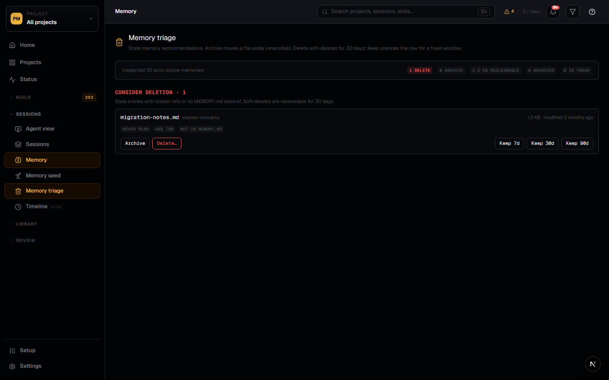
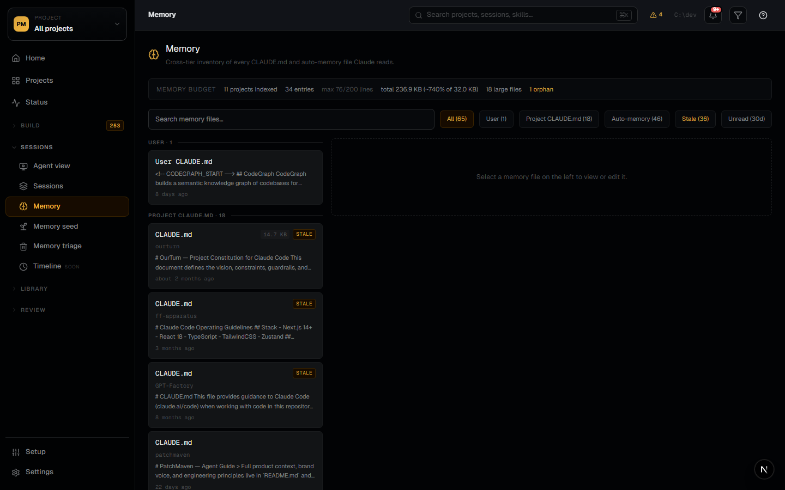
The Agent View is a real-time Kanban of every active Claude Code session across your projects — bucketed into Needs Input, Working, Idle, Completed, Failed, and Stopped. Each card surfaces a cost chip, a context-fill bar (red above 85%), a +N sub-agent chip, and an amber tool-error badge when the last tool call failed. Liveness merges three sources in priority order: the Claude daemon roster for claude --bg jobs, Live Activity hook events, and JSONL tail inference as the universal fallback. The Kanban page unifies sessions with dispatcher Tasks and adds a DAG view (Sugiyama layout with D3 edges) and a Gantt view with real execution windows. Tasks support dependency edges with DFS cycle prevention; Swarms spin up 2–8 coordinated agents in shared or worktree mode.
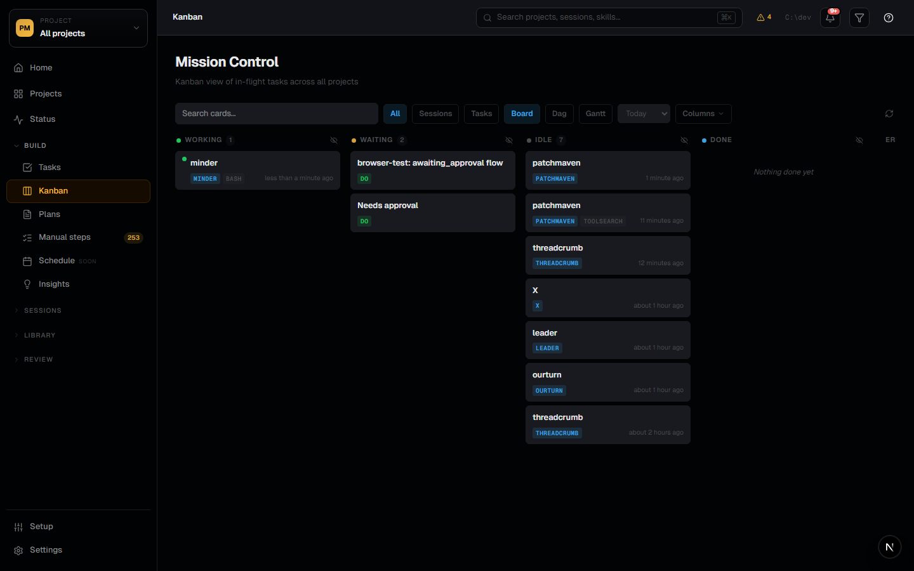

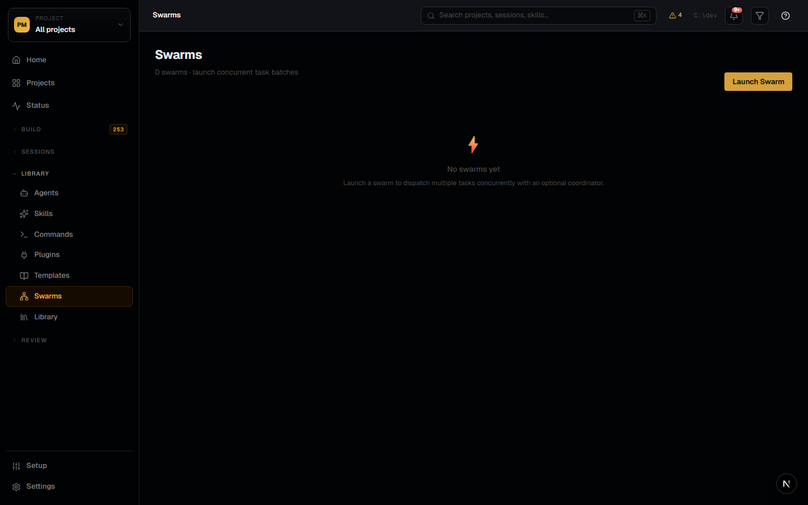

Templates package a curated bundle of Claude Code config — agents, skills, commands, hooks, MCP servers, plugin enables, GitHub Actions workflows, and selected settings.json keys — and apply it to other projects (or new projects) in one click. Templates come in two flavors: live (a pointer to a source project where edits flow through) and snapshot (a frozen copy under .minder/templates/<slug>/bundle/). The apply layer handles conflicts with skip, overwrite, merge, and rename policies, and every apply runs through a dry-run preview first. The Library ships 16 production-ready starter items — commands like /review and /commit, skills like code-reviewer and test-writer, agents like backend-architect — applied with the same idempotent layer. The New Project wizard chains it all: name a directory, pick a stack, choose library items, and Project Minder bootstraps the repo with git init and applies the selection.

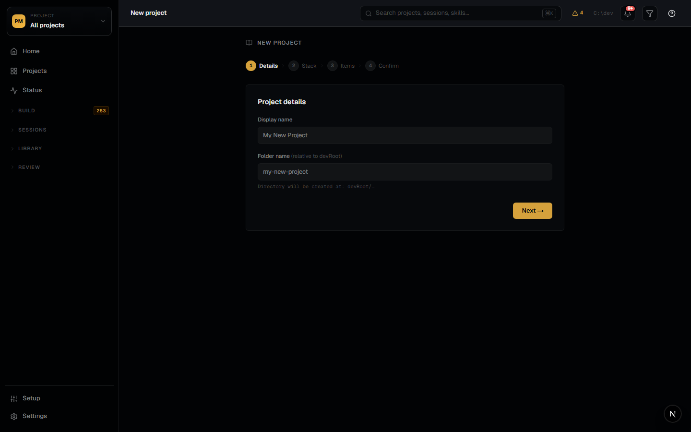

The Config Lint tab audits ten Claude Code surfaces — CLAUDE.md, skills, agents, commands, settings, hooks, MCP servers, plugins, output styles, and LSP config — with a three-pass engine combining an adapter pass, the claude-code-lint library, and vendored cross-scope rules that catch things like MCP-server name collisions across six different sources. Findings are graded P0 / P1 / P2, surface as count chips on the /agents, /skills, /commands, and /plugins browsers, and aggregate on the /stats page. The MCP Security Scanner runs 58 pattern rules across 13 threat categories — prompt injection, credential harvesting, tool poisoning, covert exfiltration, command injection, sandbox circumvention, and more — with an 8-pass deobfuscation pipeline so zero-width, Base64, and Unicode-encoded payloads are still caught. Severity-coded chips appear inline on the MCP tab; expanding a row reveals rule IDs, surfaces, evidence excerpts. Config History wraps every Claude Code config write with a copy-on-write backup so any mutation can be restored from a smart-retention vault (24 h all, 1/day for 7d, 1/week for 30d).


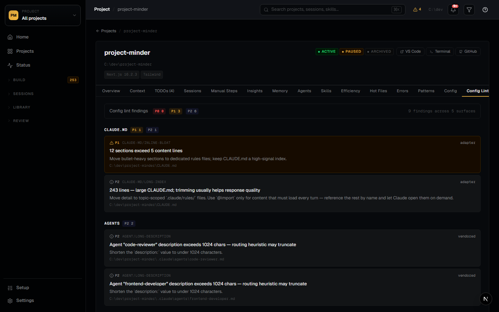
Every Claude Code session gets indexed into a SQLite FTS5 store and scored across ten quality dimensions — cache TTL expiry, cache thrash, context bloat, near-compaction state, compaction loops, tool-failure streaks, idle bursts, context-dominated turns, resume anomalies, and known-buggy CLI versions. The session detail page renders a replay timeline with retry-cycle highlights (Edit → test → re-edit loops the parser recognizes), a scrubber for stepping through turn-by-turn, fenced-code rendering, and on-demand extended-thinking expansion so heavy reasoning blocks don't bloat the default view. The Diagnosis tab turns the quality scores into a ranked findings list with explanations and remediations — "your cache hit rate dropped from 92% to 41% after the compaction at turn 84", "three consecutive tool failures on Bash before the model recovered" — actionable feedback you can apply to the next session.
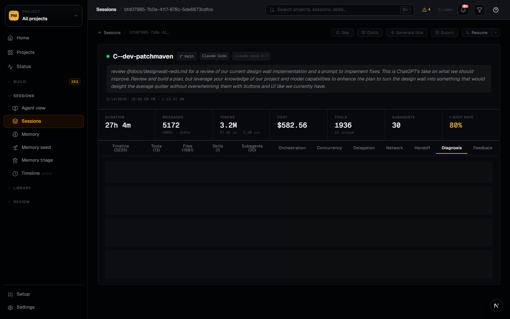
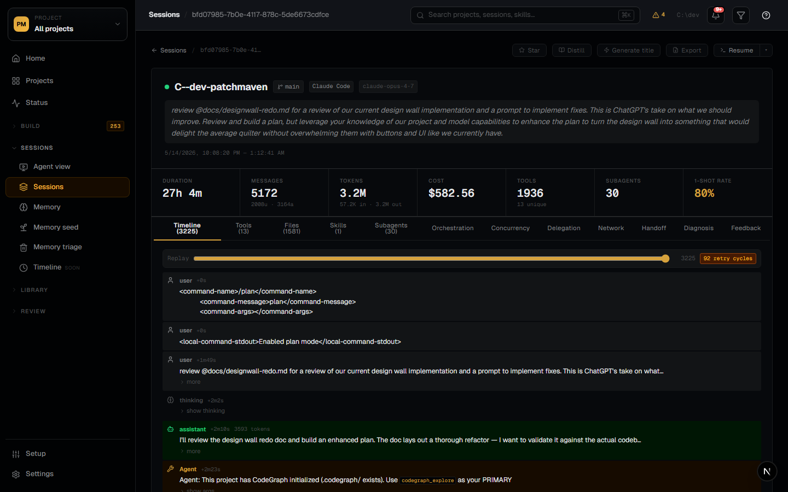
Get alerted the moment Claude adds a manual step, hits a permission prompt, or approaches a spending cap — without leaving the project you're working on. Notifications support three channels: browser push (works with the tab closed, with subscription management per-device), Telegram (bot token + chat ID configured in Settings → Integrations), and in-tab OS notifications. Each event toggles its channels independently, and a Send test push button bypasses the dedup window so you can verify delivery. Cost caps set a tier-aware budget (subscription, daily, or per-session) — Project Minder shows a daily-spend banner with the active cap, an amber warning as you approach it, and a red breach state when exceeded. Currency selection and overridable model-pricing rules let the cost numbers reflect your actual billing.
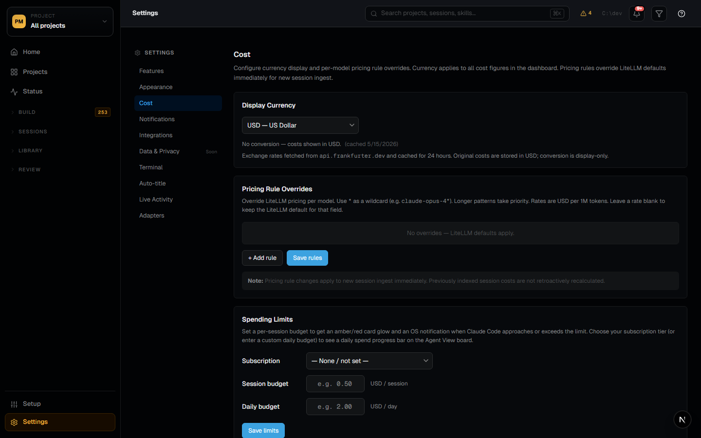
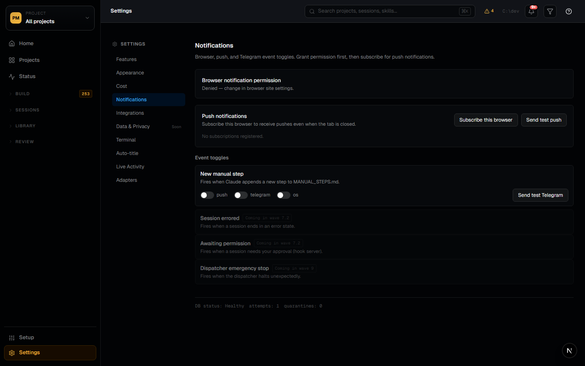
For when you need to go deeper. The Commands catalog indexes every slash command across user, plugin, and project scope with allowed-tools, argument hints, body excerpts, and one-click "copy to project". The SQL browser exposes the indexed session database directly — full schema sidebar and a results table, for when the built-in dashboards don't slice it the way you need. The Plans browser tracks GSD phase plans across all repos. Schedule manages cron-scheduled remote agent routines (create, update, run on demand). Health watches port conflicts, file-watcher status, MCP server health, and database integrity. The Insights Report viewer sandboxes and renders claude /insights's HTML output inline with server-side sanitization, polling for regeneration. Adapter settings enable Claude Code, Codex, and Gemini session sources independently so you can index sessions from every coding agent you use.
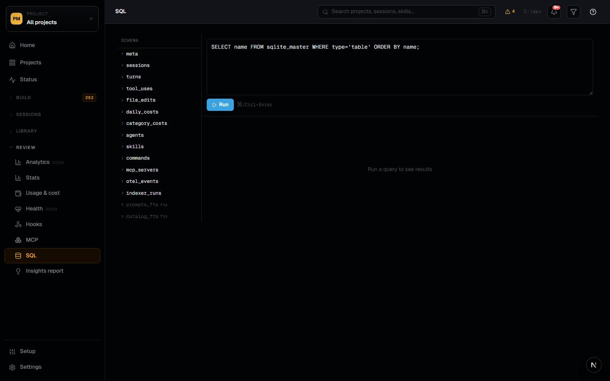
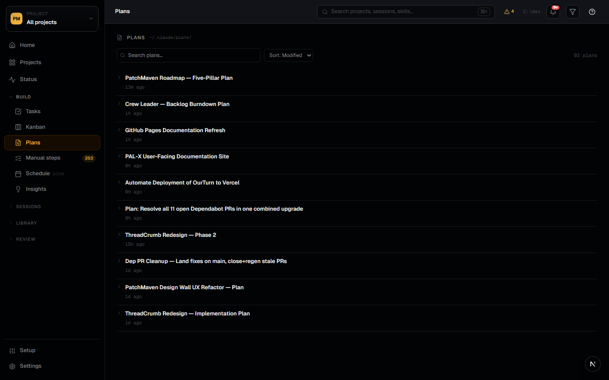


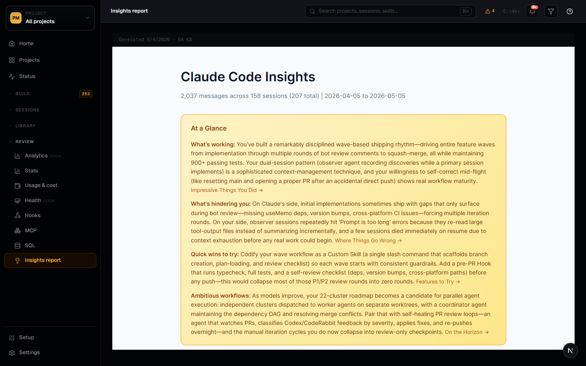
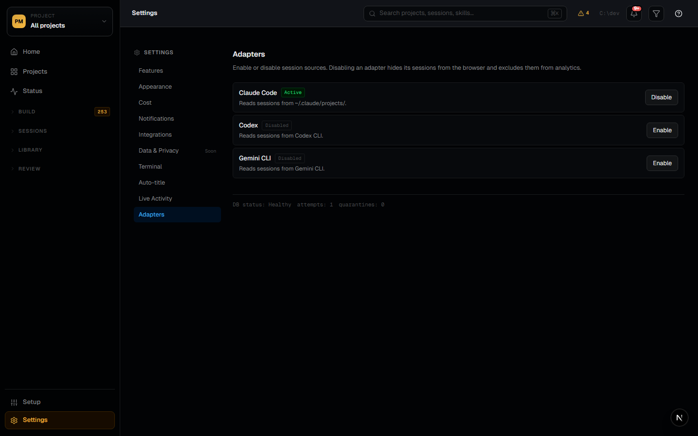

git clone https://github.com/joshuatownsend/project-minder.git
cd project-minder
npm install
# create .minder.json in the repo root:
# { "devRoots": ["~/dev"] } (Windows: "C:\\dev")
npm run dev # open http://localhost:4100Prerequisites: Node.js ≥ 20.19 · macOS, Linux, or Windows